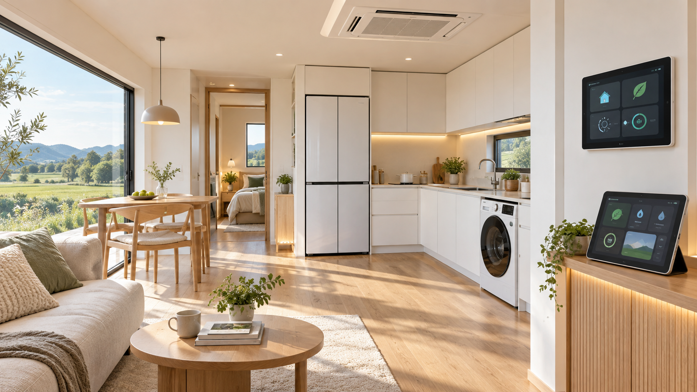
MY HOME14평 LG 스마트 단독주택
90평 주택부지에 14평 LG 스마트 코티지와 정원·데크·세대별 주차공간을 계획합니다.
JECHEON SMART FARM VILLAGE
3억 5,000만원으로 참여하는 집 + 스마트팜 14평 LG 스마트 코티지와 40평 대왕버섯 재배시설 주거와 영농, 공동 생산·운영 시스템이 연결된 19세대 스마트 공동영농 개발사업입니다
HOME + FARM
90평 주택부지의 14평 LG 스마트 코티지, 40평 대왕버섯 재배시설, 생산부터 판매·정산까지 이어지는 공동 운영 시스템. 다우팜은 19세대의 주거와 영농을 하나의 사업 구조로 연결합니다.

MY HOME90평 주택부지에 14평 LG 스마트 코티지와 정원·데크·세대별 주차공간을 계획합니다.
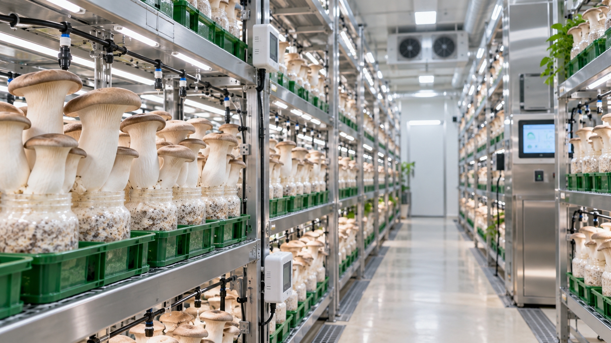
MY SMART FARM40평 대왕버섯 재배시설에서 주 20시간 이상 영농활동에 참여하고, 준공 3개월 후부터 10년간 월 300만원 우선지급을 계획합니다.
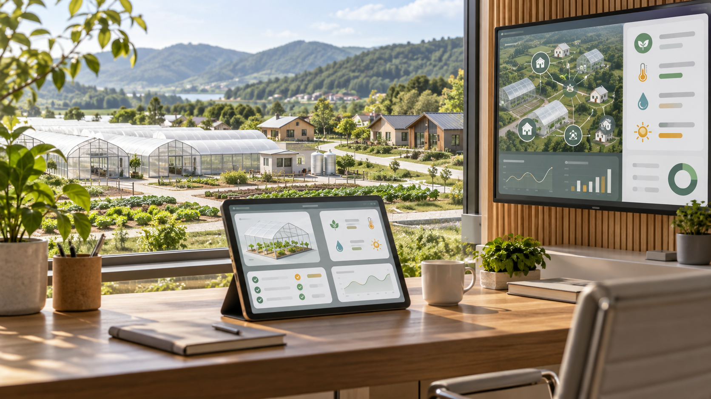
SMART MANAGEMENT
HiON 통합 관리 시스템이 출입·에너지·설비 상태와
점검·보수 이력을 체계적으로 관리합니다.
참여자는 배정구획을 확인하고 계약에서 정한 영농활동을 수행합니다.
MASTER PLAN
제천시 청풍면 광의리 일원 3,350평 사업 적용면적에 14평 LG 스마트 코티지 19동과 40평 대왕버섯 재배시설 19실, 저온·선별·포장·관리시설을 분리 배치합니다.
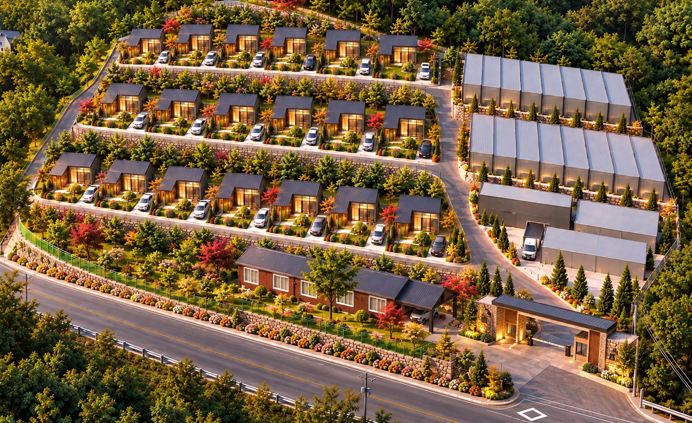
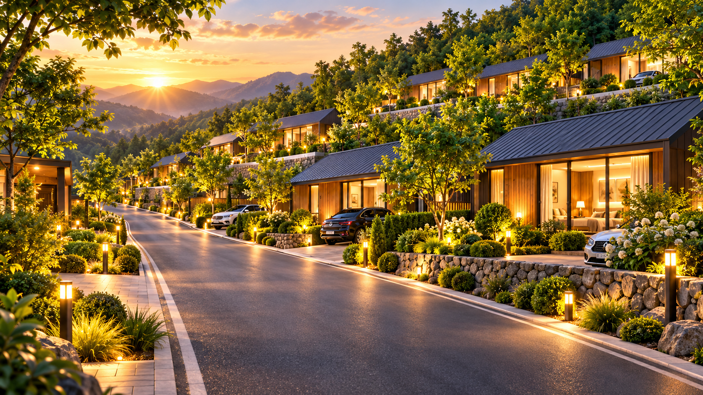
VILLAGE INFRASTRUCTURE
주거구역과 영농구역을 분리하고, 재배시설에서 수확한 대왕버섯이 공동 선별·저온보관·포장을 거쳐 판매처로 출하되도록 계획합니다. 내부도로와 공용 기반시설은 동별 진입·배수·조경을 지원합니다.
세대별 90평 주택부지에 14평 스마트 코티지와 정원·데크·주차공간, 단지 내 진입로를 계획합니다.
40평 재배시설 19실과 환경관리 시스템을 구성하고 배지·종균 조달부터 생산·출하 이력까지 공동 관리합니다.
50평 저온·냉장시설, 30평 선별·포장센터, 30평 관리·직원시설이 공동 생산과 출하를 지원합니다.
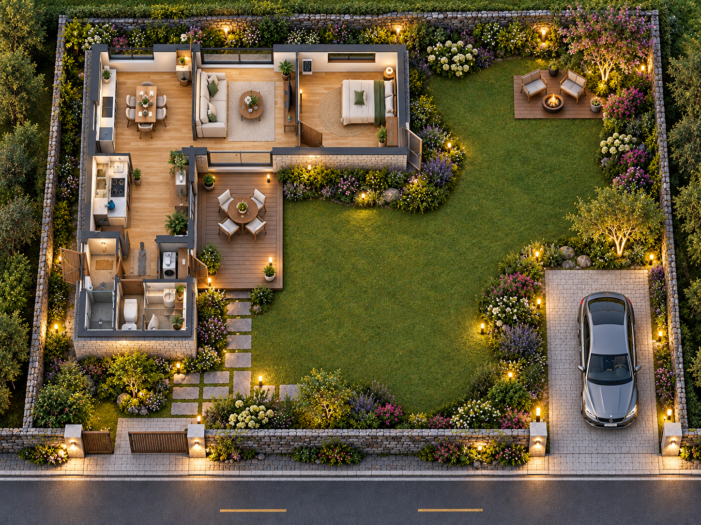
MY HOME
조합원 주택은 세대별 90평 주택부지에 계획하는 14평 LG 스마트 코티지입니다. 개별 주거와 정원·데크·주차공간을 구성하고, 주거구역과 영농구역을 분리해 생활 동선을 계획합니다. 세부 평면과 가전·설비 사양은 실시설계와 공급계약에서 확정됩니다.
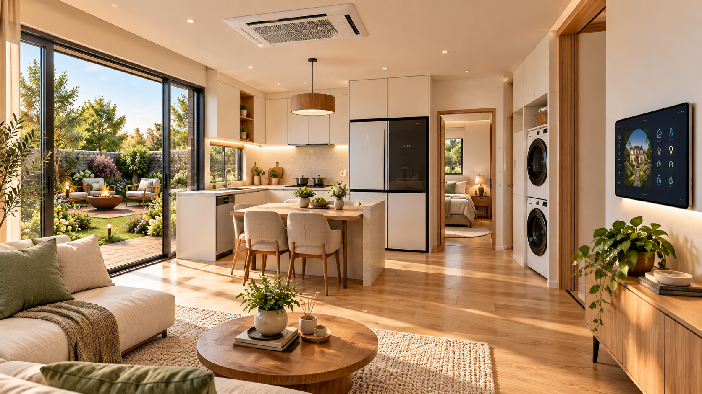
LG SMART APPLIANCE
냉장고, 세탁·건조, 인덕션, 에어컨, 스마트 조명과 홈 관리 패널을 하나의 생활 동선 안에 배치합니다. 입주 후 가전을 따로 맞추는 번거로움을 줄이고, 처음부터 완성된 주거 경험을 제공합니다.
DETAIL COMPONENTS
온수와 난방 사용이 가능한 콘덴싱 보일러를 기본 구성합니다.
슬림한 디자인의 냉방 전용 천장형 에어컨으로 실내 쾌적성을 높입니다.
주방 동선에 맞춰 냉장 보관 기능을 완성형 주거 구성에 포함합니다.
세탁과 건조 생활 동선을 고려한 9kg 세탁 설비를 배치합니다.
블랙 빌트인 인덕션으로 깔끔한 조리 공간을 구성합니다.
CONNECTED HOME
LG 스마트코티지는 공유기, ThinQ 허브, 도어락과 스마트 스위치를 연결해 조명, 보안, 실내환경을 더 편리하게 관리합니다.
집 안 통신 환경을 안정적으로 제공합니다.
Zigbee 장치를 제어하는 초소형 허브입니다.
원격 문열림과 기간제 비밀번호 발급을 지원합니다.
조명과 루틴을 편리하게 켜고 끌 수 있습니다.
SMART FARM
40평 대왕버섯 재배시설 19실은 재배부터 판매·정산까지 공동 운영 시스템과 연결됩니다. 실당 월매출 4,875만원을 적용한 초기 추정치를 기준으로 하며, 실제 생산성과 가격·수율은 운영 과정에서 검증합니다.
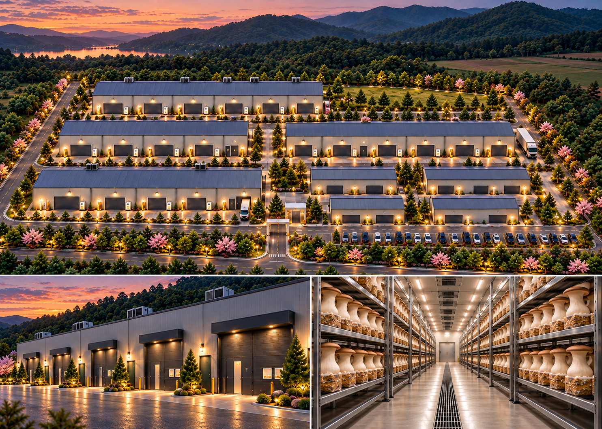
FARM PROCESS
다우팜은 생산계획과 시설운영을 관리하고, 참여자는 배정구획 확인과 계약에서 정한 영농활동에 참여합니다.
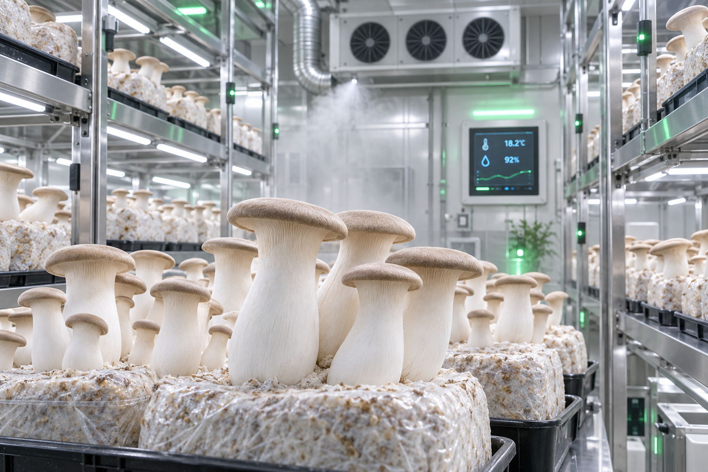
01 종균·배지 공급공동 조달한 종균과 배지를 각 재배실의 생산계획에 맞춰 공급합니다.
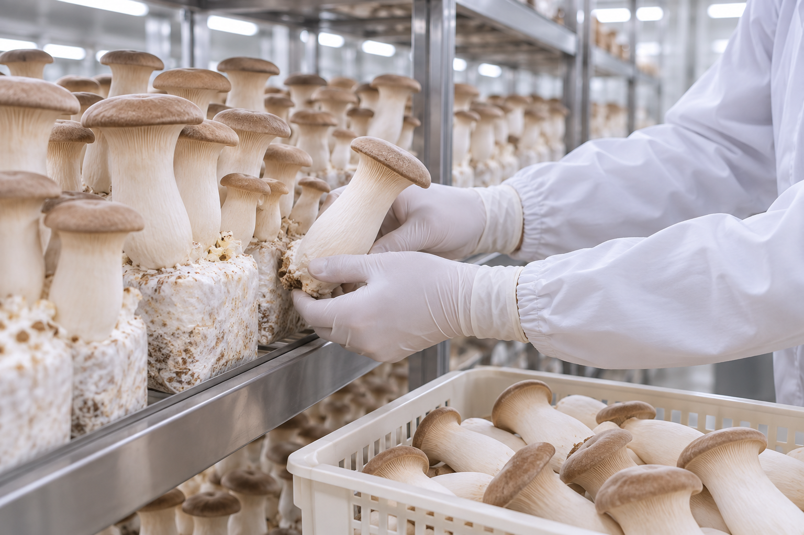
02 재배환경 관리온·습도와 환기·공조, LED 생육조명, 통합제어 설비로 재배환경을 관리합니다.
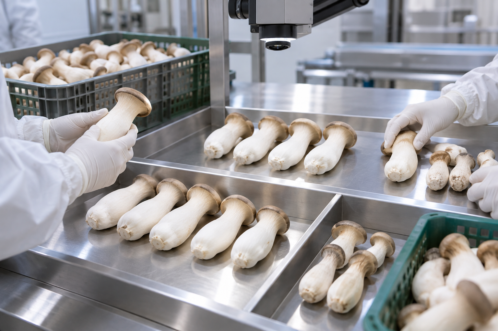
03 수확·품질 검사생육 상태와 품질을 확인하고 재배실별 수확량과 출하 이력을 기록합니다.
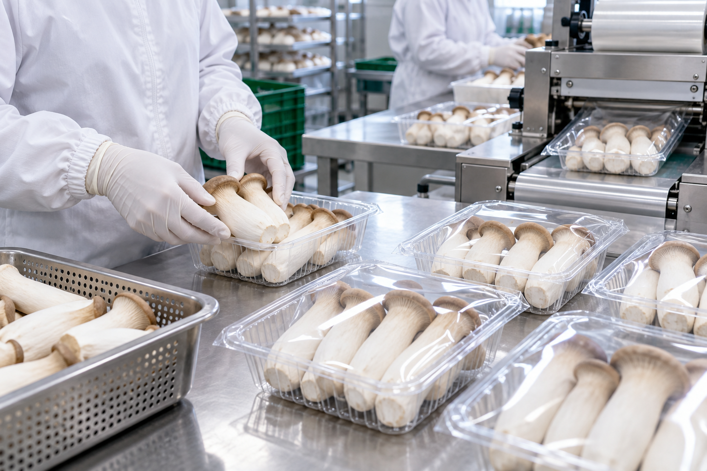
04 선별·저온보관공동 선별 기준을 적용하고 50평 저온·냉장시설에서 재고와 품질을 관리합니다.
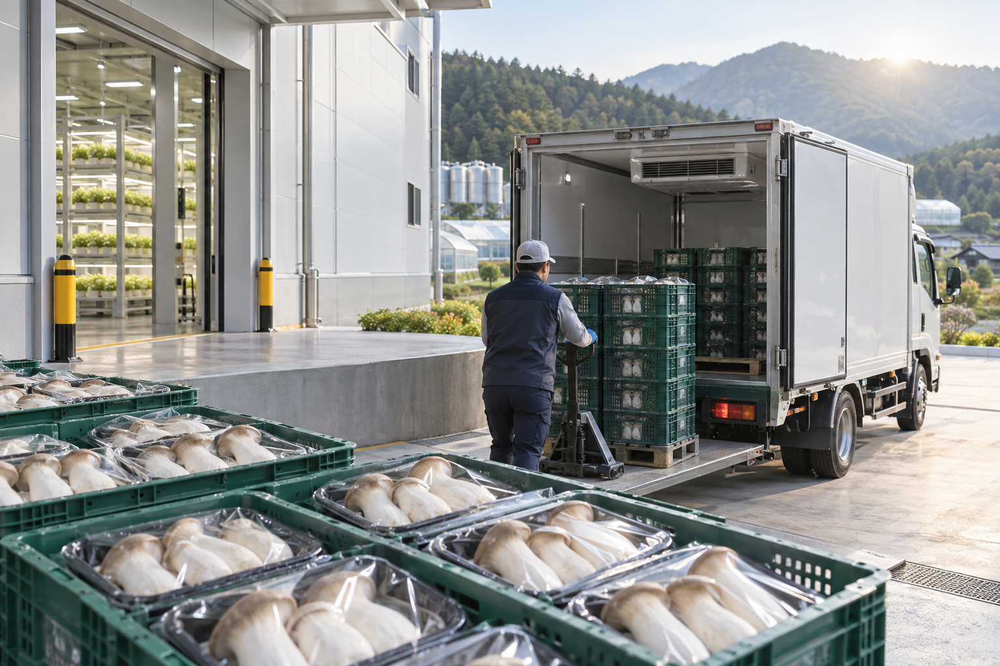
05 판매·정산공동 포장·출하 후 거래처별 단가와 수금·재고를 확인하고 조합원 수익을 정산합니다.
OPERATION
참여자는 배정구획을 확인하고 계약에서 정한 영농활동에 주 20시간 이상 참여합니다. 다우팜은 배지·종균 조달, 생산계획, 환경관리, 품질선별, 포장·출하, 시설 유지관리와 판매처 운영을 공동으로 수행합니다.
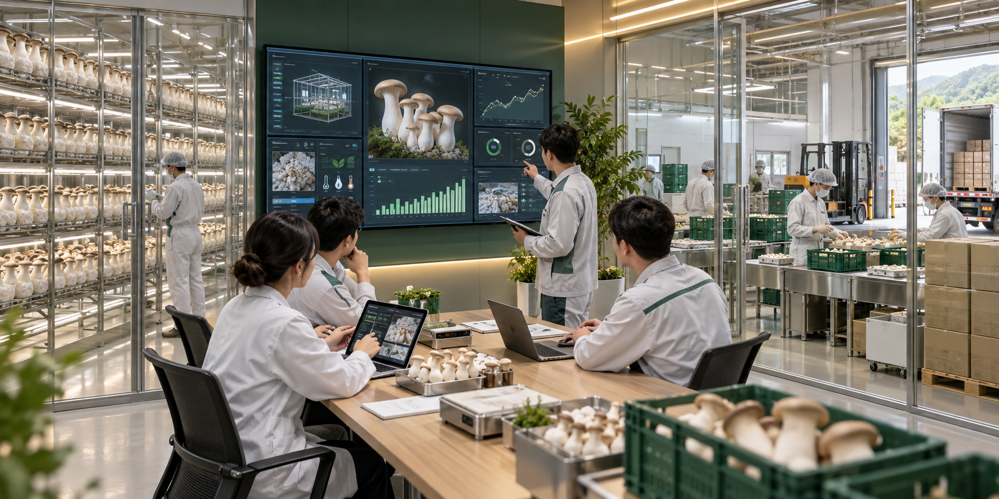
PROFESSIONAL OPERATOR
생산·운영 단계에서는 시설 상태와 품질, 재배실별 수확량·출하량·원가를 기록합니다. 판매·수금 단계에서는 출하계약과 거래처별 단가·수금·재고를 확인하고, HiON으로 출입·에너지·설비 상태와 점검·보수 이력을 통합 관리합니다.
월 300만원 우선지급은 준공 3개월 후 시작해 10년간 계획되며, 주 20시간 이상 근무조건을 전제로 합니다.Life of Smart Farm Village
19세대 주거구역과 19실 재배구역을 분리 배치하고, 공동 선별·저온보관·포장시설로 생산과 출하를 연결합니다. 주택과 재배시설, 공용 기반시설을 하나의 운영체계로 관리해 안정적인 주거환경과 공동영농 기반을 조성합니다.
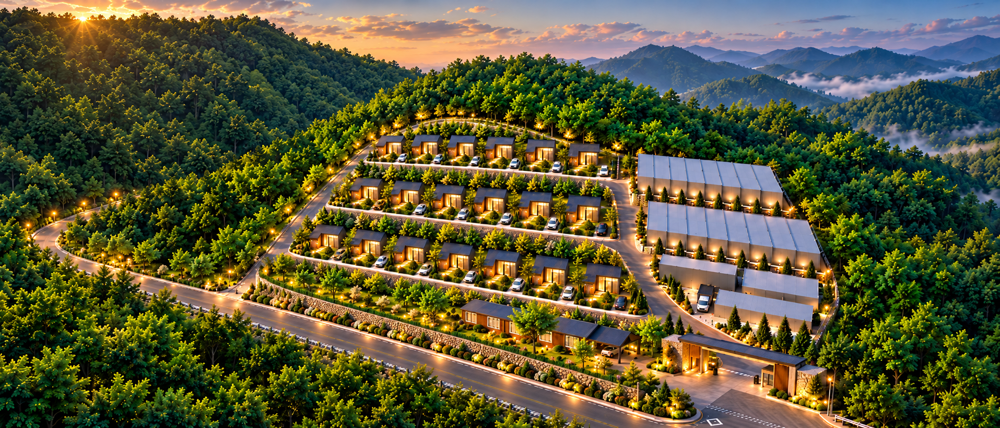
14평 LG 스마트 코티지와 정원·데크·세대별 주차공간을 계획합니다.
참여자는 배정구획을 확인하고 주 20시간 이상 영농활동에 참여합니다.
저온·선별·포장시설이 수확물의 품질관리와 출하 준비를 지원합니다.
출입·에너지·설비 상태와 장애 접수·점검·보수 이력을 관리합니다.
WHY DAWOO FARM
편안한 주거와 안정적인 영농 기반을 하나의 생활 안에 담았습니다.
LG의 스마트 홈 기술과 다우팜의 스마트팜 운영체계를 통해 살고, 일하고, 소득을 만들어가는 새로운 미래의 삶을 제안합니다.
Dawoo LG Smart Farm Village Jaecheon
자연은 집 밖에. 기술은 집 안에. 농장은 삶 가까이에.
19명의 조합원과 함께 시작합니다. 1인 참여금 3억 5,000만원.